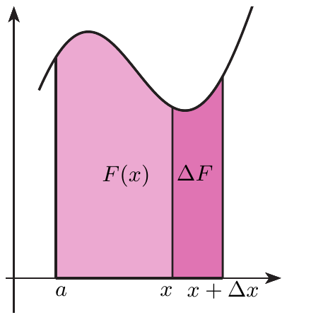
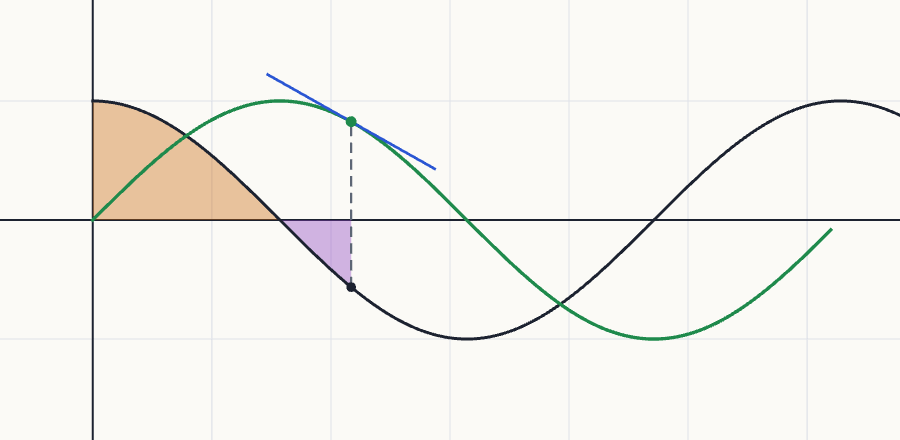

Teoremas fundamentales del Cálculo
El puente entre derivar e integrar. El primer teorema dice que la derivada del área acumulada es la función de la que se acumula; el segundo (regla de Barrow) convierte las integrales definidas en una resta de valores de una primitiva. Con ellos se deja de calcular integrales con sumas de rectángulos.
0Antes de empezar U p.242
La integral (acumular área) y la derivada (medir cómo cambia algo) son operaciones inversas. Es como el cuentakilómetros y el velocímetro de un coche: si miras cuánto marca el cuentakilómetros en cada instante y calculas con qué rapidez va subiendo, recuperas la velocidad (primer teorema); y si conoces la velocidad en cada instante, los kilómetros recorridos entre dos momentos son la resta de dos lecturas del cuentakilómetros (segundo teorema). Newton y Leibniz lo establecieron de forma independiente en el siglo XVII (U p.242).
U pp.242, 245Qué necesitas saber ya
- Integral definida y sus propiedades (tema 6.1): área con signo, aditividad $\int_a^b=\int_a^c+\int_c^b$ (P5) y cambio de orden $\int_a^b=-\int_b^a$ (P6).
- Primitiva (Def. 6.2, tema 6.1, apartado 5): $F$ es primitiva de $f$ si $F'=f$; todas las primitivas se diferencian en una constante.
- Derivadas y regla de la cadena (tema 2.2): $(g\circ f)'(a)=g'(f(a))\,f'(a)$.
- Signo de la derivada y monotonía; dos funciones con la misma derivada se diferencian en una constante (consecuencia del valor medio, tema 2.5; se usa en la demostración de Barrow); extremos y criterio de la segunda derivada (tema 3.4); inflexión (tema 3.5): solo en E 6.12 y 6.13.
- L'Hôpital (tema 2.3): solo en el Propio 1.
Mapa del tema
| Apartado | Qué contiene | Dónde está |
|---|---|---|
| 1 Funciones definidas por una integral | la función $F(x)=\int_a^x f$; Ej. 6.5 (erf, Li) | U pp.242-243 |
| 2 Primer teorema fundamental | Teor. 6.1; demostración; interactivo; Ej. 6.6, 6.7; límites variables | U pp.243-244 |
| 3 Segundo teorema (Barrow) | Teor. 6.2; demostración; Ej. 6.8; valor medio integral | U pp.244-245 |
| 4 Ejercicios de E | 6.11-6.16 (6 ejercicios) | E pp.218-223 |
| 5 Ejemplos propios | 4 ejemplos, de menos a más difícil | propio |
| 6 Examen | 6 problemas de X | X |
| 7 Chuleta y comprobación | fórmulas, errores, lista | síntesis |
Qué se pide en los ejercicios y en el examen
(A) Derivar una integral con el límite superior (o el inferior, o los dos) variable: es el primer teorema con la regla de la cadena (E 6.12, 6.14, 6.15). (B) Estudiar la monotonía, los extremos y la inflexión de $F(x)=\int_a^xf$ sin calcular la integral, mirando $F'=f$ (E 6.12, 6.13; X, el tipo de pregunta más frecuente). (C) Calcular una integral definida con la regla de Barrow, comprobando antes que el integrando es continuo en todo el intervalo (E 6.16; X). (D) Teoría: qué es una primitiva (E 6.11) y cuándo se puede aplicar cada teorema. La búsqueda de primitivas difíciles (partes, sustitución, fracciones simples) llega en §6.3.
1Funciones definidas por una integral U pp.242-243
Imagina que una cortina se va desplegando de izquierda a derecha por debajo de una gráfica. En cada momento, el área que ha cubierto depende de hasta dónde ha llegado, es decir, del extremo derecho $x$. Eso es una función: a cada $x$ le asigna un número, el área acumulada $F(x)$. Es lo mismo que el cuentakilómetros: lo recorrido hasta el instante $x$.
U se hace una pregunta: ¿tienen primitiva todas las funciones integrables? Por ejemplo, $f(t)=e^{-t^2}$ es integrable en $[0,x]$ para cualquier $x$, pero su primitiva no se puede escribir con funciones elementales. Entonces se define una función con la propia integral (U p.242): $$F(x)=\int_0^xe^{-t^2}\,dt.\qquad(6.1)$$ «Es una función porque a cada valor de $x$ le asigna un valor $F(x)$». Como $e^{-t^2}$ es continua y no negativa, $F(x)$ es el área entre su gráfica y el eje $x$ entre $0$ y $x$ (U p.243).
U pp.242-243Si $f$ es continua en $[a,b]$, para cada $x\in[a,b]$ se define $$F(x)=\int_a^xf(t)\,dt.$$ La variable de integración se llama $t$ (cualquier letra sirve: es «muda») para no confundirla con el extremo superior $x$, que es la variable de $F$. Esta $F$ es continua en $[a,b]$ y, si $f$ es continua, también derivable (Teor. 6.1). Fíjate en que la integral definida $\int_a^bf$ es un número, mientras que $F(x)$ es una función de $x$.
P U p.242Es común el uso de funciones así definidas. En Estadística se utiliza la función error $$\operatorname{erf}(x)=\frac2{\sqrt\pi}\int_0^xe^{-t^2}\,dt,$$ y otro ejemplo es la integral logarítmica $$\operatorname{Li}(x)=\int_2^x\frac{dt}{\ln t},$$ cuyo valor es el número aproximado de números primos menores que $x$ (U p.243).
U p.2432Primer teorema fundamental del Cálculo U pp.243-244
Si desplazas el extremo derecho un poco, de $x$ a $x+\Delta x$, el área gana una tira muy estrecha. La tira es casi un rectángulo de base $\Delta x$ y altura $f(x)$, así que gana $\approx f(x)\,\Delta x$. Dividida entre $\Delta x$, la rapidez con que crece el área es justo la altura $f(x)$. Es el velocímetro: la rapidez con que sube el cuentakilómetros es la velocidad que marca ahora.
U pp.243-244Si $f:[a,b]\to\mathbb R$ es una función continua, entonces la función $$F(x)=\int_a^xf(t)\,dt$$ es derivable en $[a,b]$ y se cumple $$F'(x)=f(x)\qquad\forall x\in(a,b).$$ En palabras: derivar una integral con el extremo superior variable devuelve el integrando, evaluado en ese extremo.
U p.243 S p.388 L p.284
- $F(x)$ es un área: el área delimitada por la gráfica de $f$ y el eje $x$ entre $a$ y $x$.
- Un poco más a la derecha: se toma $x+\Delta x$ y se llama $\Delta F=F(x+\Delta x)-F(x)$ al incremento del área (la tira de la figura).
- Aproximar la tira por un rectángulo de base $\Delta x$ y altura $f(x)$: $\Delta F\approx\Delta x\cdot f(x)$.
- Afinar la aproximación (explicación propia): por el valor medio integral, $\Delta F=\int_x^{x+\Delta x}f=f(c)\,\Delta x$ para algún $c$ entre $x$ y $x+\Delta x$. Cuando $\Delta x\to0$, $c\to x$ y, como $f$ es continua, $f(c)\to f(x)$. P
- Despejar y tomar límites: $\dfrac{\Delta F}{\Delta x}\approx f(x)\ \Longrightarrow\ \displaystyle\lim_{\Delta x\to0}\frac{\Delta F}{\Delta x}=f(x)$.
- Ese límite es, por definición, $F'(x)$. Luego $F'(x)=f(x)$.
Relaciona integración y derivación, y dice que derivar es lo inverso de integrar. Además garantiza que toda función continua en un intervalo tiene primitiva: la propia $F(x)=\int_a^xf$ lo es. Así se responde a la pregunta del apartado 1: $e^{-t^2}$ sí tiene primitiva, aunque no se pueda escribir con funciones elementales (U p.244).
U p.244
Cómo se usa: «quitar el signo integral»
Calcular la derivada de $F(x)=\displaystyle\int_0^x(t^2\operatorname{sen}t+2t)\,dt$.
- Comprobar la hipótesis: el integrando $t^2\operatorname{sen}t+2t$ es continuo en todo $\mathbb R$.
- Aplicar el Teorema 6.1: se elimina el signo integral y se sustituye $t$ por $x$: $$F'(x)=x^2\operatorname{sen}x+2x.$$
Calcular la derivada de $G(x)=\displaystyle\int_x^0(t^4+2)\,e^{-t^2}\,dt$.
- La $x$ está abajo. El teorema solo habla del extremo superior; se intercambian los límites (propiedad P6), lo que cambia el signo: $G(x)=-\displaystyle\int_0^x(t^4+2)e^{-t^2}\,dt$.
- Derivar: $G'(x)=-(x^4+2)\,e^{-x^2}$.
Si $f$ es continua y $a(x)$, $b(x)$ son derivables, $$\frac{d}{dx}\int_{a(x)}^{b(x)}f(t)\,dt=f\big(b(x)\big)\,b'(x)-f\big(a(x)\big)\,a'(x).$$ «Integrando en el límite de arriba por la derivada del límite de arriba, menos integrando en el límite de abajo por la derivada del límite de abajo». Los casos anteriores son particulares: arriba $x$ (derivada $1$) y abajo constante (derivada $0$) da $f(x)$; abajo $x$ y arriba constante da $-f(x)$. La fórmula se demuestra en el Ejercicio 6.15 (más abajo) partiendo la integral en un punto fijo y usando la regla de la cadena.
E p.221(i) Olvidar el factor de la regla de la cadena: $\frac{d}{dx}\int_0^{x^2}\cos t\,dt=\cos(x^2)\cdot2x$, no $\cos(x^2)$. (ii) Olvidar el signo menos cuando la $x$ está en el límite inferior. (iii) Evaluar el integrando en $x$ cuando el límite es otra expresión ($x^2$, $e^x$…): hay que evaluarlo en esa expresión. (iv) Aplicar el teorema sin continuidad del integrando.
P3Segundo teorema fundamental: regla de Barrow U pp.244-245
Para saber cuántos kilómetros has hecho entre las 10:00 y las 12:00 no hace falta sumar velocidades instante a instante: basta mirar el cuentakilómetros a las 12:00 y a las 10:00 y restar. Aquí la «velocidad» es $f$ y el «cuentakilómetros» es una primitiva $F$. Por eso, en lugar de sumas de Riemann, para calcular $\int_a^bf$ basta encontrar una primitiva y restar sus valores en los extremos.
U p.245Si $f$ es una función continua en $[a,b]$ y $F$ es cualquier primitiva de $f$, entonces $$\int_a^bf(x)\,dx=F(x)\Big|_a^b=F(b)-F(a).$$ La notación $F(x)\big|_a^b$ significa $F(b)-F(a)$. También se conoce como regla de Barrow.
U p.244 S p.391 L p.278- Hipótesis: $F'(x)=f(x)$ en $[a,b]$.
- Otra primitiva, la del primer teorema: $G(x)=\int_a^xf(t)\,dt$ cumple $G'(x)=f(x)$ (Teor. 6.1).
- Dos primitivas se diferencian en una constante (consecuencia del valor medio, tema 2.5): $(F-G)'=f-f=0$, luego $F(x)=G(x)+k$.
- Hallar $k$: en $x=a$, $G(a)=\int_a^af=0$, así que $k=F(a)$.
- Evaluar en $b$: $\int_a^bf(x)\,dx=G(b)=F(b)-k=F(b)-F(a)$.
El Teorema 6.2 es válido para cualquier primitiva de $f$ (si se toma $F+C$, la constante se cancela en la resta). Lo que no dice es cómo hallar la primitiva ni si se puede expresar con funciones elementales (U p.245): eso es el tema de §6.3.
U p.245- Continuidad: $e^x$ es continua en $[0,1]$.
- Una primitiva: $F(x)=e^x$ (su derivada es $e^x$).
- Barrow: $\displaystyle\int_0^1e^x\,dx=F(1)-F(0)=e^1-e^0=e-1$.
Es el mismo valor que costó tanto obtener con sumas de Riemann y un límite en U Ej. 6.1 (tema 6.1): «observe la sencillez del cálculo» (U p.245).
Si $x(t)$ es la posición de un móvil y $v(t)=x'(t)$ su velocidad, la regla de Barrow dice $$\int_a^bv(t)\,dt=x(b)-x(a)\qquad(6.2)$$ (U p.245): integrando la velocidad se obtiene el desplazamiento (variación de posición), que cuenta con signo: ir hacia atrás resta. El espacio recorrido (los kilómetros que marca el cuentakilómetros) es $\int_a^b|v(t)|\,dt$, que solo coincide con el desplazamiento si $v$ no cambia de signo. Y la suma de Riemann $\sum_i v(t_i)\,\Delta t$ es la forma intuitiva: en cada tramo corto de duración $\Delta t$ se avanza $\approx v(t_i)\,\Delta t$ y se suma. En general, la integral de una razón de cambio es el cambio neto (S p.401; L Teor. 4.12, p.286).
U pp.245-246 S p.401 L p.286Para cualquier función continua en $[a,b]$ existe $c\in[a,b]$ tal que $$\int_a^bf(x)\,dx=f(c)\,(b-a).$$ Es el rectángulo de base $b-a$ y altura $f(c)$ con la misma área que la región bajo la gráfica. El número $\dfrac1{b-a}\int_a^bf$ es el valor medio de $f$ en $[a,b]$. U lo enuncia en una nota al margen (p.244) y remite a su demostración, que es E 6.9 (tema 6.1).
U p.244 L pp.280-281El teorema exige que $f$ sea continua en todo $[a,b]$. Si hay un punto «prohibido» dentro del intervalo (un denominador que se anula, un logaritmo de $0$…), la cuenta $F(b)-F(a)$ puede dar un número, pero no significa nada. Ejemplo: $\int_{-1}^1\frac{dx}{x^2}$ «saldría» $\big[-\frac1x\big]_{-1}^1=-2$, un resultado negativo para una función positiva, imposible (se estudia en E 6.16 y en el Propio 2).
P4Ejercicios del libro, resueltos E pp.218-223
Orden recomendado para aprender: qué es una primitiva (6.11) → límite inferior variable (6.14) → cuándo se puede usar Barrow (6.16) → monotonía y extremos de $\int_0^x$ (6.13) → primer teorema con regla de la cadena e inflexión (6.12) → fórmula con los dos límites variables (6.15).
Índice rápido: 6.11 · 6.12 · 6.13 · 6.14 · 6.15 · 6.16.
Derivar $G(x)=\int_{a(x)}^{b(x)}f$: $G'=f(b(x))\,b'(x)-f(a(x))\,a'(x)$. Calcular $\int_a^bf$: comprobar continuidad, primitiva comprobada, $F(b)-F(a)$. Estudiar $F(x)=\int_a^xf$: $F'=f$, así que $F$ crece donde $f\gt0$ y decrece donde $f\lt0$; los puntos críticos son los ceros de $f$ y $F''=f'$ (si $f$ es derivable).
Ejercicio 6.11 · primitivas: ¿cuál de las igualdades es siempre cierta? E pp.218-219
Sea $F:\mathbb R\to\mathbb R$ una primitiva de una función continua $f:\mathbb R\to\mathbb R$ y $C\in\mathbb R$ una constante. Señale la opción correcta: a) $\frac{d}{dx}\big(F(x)+C\big)=f(x)$, $\forall x\in\mathbb R$. b) $\frac{d}{dx}\big(f(x)+C\big)=F(x)$, $\forall x\in\mathbb R$. c) $\int F(x)\,dx=f(x)+C$, $\forall x\in\mathbb R$. d) Ninguna de las anteriores.
- Qué me piden
- Decidir cuál de tres igualdades sobre $f$, su primitiva $F$ y una constante $C$ es siempre cierta.
- Cómo lo pienso
- «$F$ es primitiva de $f$» quiere decir una sola cosa: derivando $F$ sale $f$. Cada opción se traduce a «¿qué se deriva y qué sale?» y se comprueba.
- Qué uso
- Def. 6.2 de primitiva (U p.241): $F'=f$; la derivada de una constante es $0$.
- Por dónde empiezo
- Derivar $F(x)+C$ en a).
- Traducir la hipótesis. $F'(x)=f(x)$ para todo $x$.
- a) Verdadera. La derivada de una suma es la suma de derivadas y la de una constante es $0$: $\frac{d}{dx}(F(x)+C)=F'(x)+0=f(x)$. Es decir, $F+C$ es otra primitiva de $f$; por eso se escribe $\int f=F+C$.
- Ejemplo para probar las demás: $f(x)=1$ (continua), $F(x)=x$ (su derivada es $1$), $C=1$.
- b) Falsa. Nada garantiza que $f$ sea derivable (solo es continua; por ejemplo $|x|$ no es derivable en $0$). Y aunque lo sea: con el ejemplo, $\frac{d}{dx}(1+1)=0\ne x=F(x)$ para $x\ne0$.
- c) Falsa. Dice que las primitivas de $F$ son $f+C$, es decir, que $(f+C)'=F$. Con el ejemplo, las primitivas de $F(x)=x$ son $\frac{x^2}2+C$, no $1+C$ (derivando $1+C$ sale $0\ne x$).
- d) Falsa, porque a) es correcta. Respuesta: a).
Invertir los papeles (creer que $f$ es la «primitiva» de $F$) o pensar que la constante cambia la derivada: $F+C$ y $F$ tienen la misma derivada.
Ejercicio 6.14 · $\frac{d}{dx}\int_x^1t^2\,dt$ E pp.220-221
Calcula el valor de $\displaystyle\frac{d}{dx}\left(\int_x^1t^2\,dt\right)$.
- Qué me piden
- La derivada respecto de $x$ de una integral cuyo límite inferior es $x$.
- Cómo lo pienso
- El primer teorema solo dice cómo derivar si la $x$ está arriba. Le doy la vuelta a la integral (cambia el signo) y la $x$ queda arriba.
- Qué uso
- Cambio de orden de los límites (P6, U p.240), primer teorema (U Teor. 6.1, p.243) y U Ej. 6.7 (p.244).
- Por dónde empiezo
- Escribir $\int_x^1=-\int_1^x$.
- Comprobar la hipótesis. $f(t)=t^2$ es continua en todo $\mathbb R$.
- Intercambiar los límites (P6): $\int_x^1t^2\,dt=-\int_1^xt^2\,dt$.
- Derivar con el primer teorema. Ahora $x$ está arriba y el límite de abajo ($1$) es fijo: $\frac{d}{dx}\left(-\int_1^xt^2\,dt\right)=-x^2$.
- Resultado: $-x^2$.
- Comprobación con Barrow. $\int_x^1t^2\,dt=\left[\frac{t^3}3\right]_x^1=\frac13-\frac{x^3}3$, cuya derivada es $-x^2$. Coincide.
Contestar $x^2$ (olvidar el signo) o $\frac13-\frac{x^3}3$ (calcular la integral y no derivarla).
Ejercicio 6.16 · ¿cuándo se puede aplicar Barrow a $\frac1{x-1}$? E pp.222-223
Se sabe que $\displaystyle\int\frac1{x-1}\,dx=\ln|x-1|+C$ en $\mathbb R\setminus\{1\}$. ¿Qué opción es verdadera? a) No hay relación entre la integral definida y la indefinida. b) Utilizando Barrow resulta $\int_0^2\frac1{x-1}\,dx=0$. c) Utilizando Barrow resulta $\int_2^3\frac1{x-1}\,dx=\ln2$.
- Qué me piden
- Decidir en qué casos se puede usar la regla de Barrow con la primitiva $\ln|x-1|$.
- Cómo lo pienso
- Barrow tiene una hipótesis: integrando continuo en todo el intervalo $[a,b]$. Si el intervalo contiene el punto donde $\frac1{x-1}$ «explota» ($x=1$), no se puede usar, aunque la cuenta «salga».
- Qué uso
- Regla de Barrow (U Teor. 6.2, p.244), con su hipótesis de continuidad.
- Por dónde empiezo
- Mirar si $x=1$ está en $[0,2]$ y en $[2,3]$.
- a) Falsa. La regla de Barrow es precisamente la relación entre ambas: la integral definida se calcula con una primitiva (integral indefinida).
- Hipótesis en b). $f(x)=\frac1{x-1}$ no está definida en $x=1\in[0,2]$: no es continua en $[0,2]$ y no se puede aplicar Barrow.
- Por qué la cuenta engaña. A ciegas saldría $\ln|2-1|-\ln|0-1|=0-0=0$. Pero cerca de $x=1$ la función no está acotada ($f(1{,}001)=1000$, $f(0{,}999)=-1000$), así que no es integrable en $[0,2]$ y esa integral no tiene sentido como integral de Riemann. Un resultado numérico no prueba nada si falla la hipótesis.
- Hipótesis en c). En $[2,3]$, $x-1\in[1,2]$ nunca vale $0$: $f$ es continua y Barrow se puede aplicar.
- Cálculo de c). Con $F(x)=\ln|x-1|$ (se toma $C=0$: vale cualquier primitiva, U p.245): $\int_2^3\frac{dx}{x-1}=\ln2-\ln1=\ln2$.
- Respuesta: c).
Aplicar Barrow «porque se conoce la primitiva» sin mirar el intervalo (ver Propio 2).
Ejercicio 6.13 · monotonía y extremos de $F(x)=\int_0^xt\operatorname{sen}t\,dt$ E p.220
Dada la función $F(x)=\displaystyle\int_0^xt\operatorname{sen}t\,dt$ definida en $I=[0,\infty)$, señala la opción correcta. a) $F$ alcanza un máximo en $x=7\pi$. b) $F$ es creciente en $I$. c) $F$ alcanza un mínimo en $x=7\pi$. d) $F$ es decreciente en $I$.
- Qué me piden
- Estudiar la monotonía de $F$ y qué pasa en $x=7\pi$.
- Cómo lo pienso
- No hace falta calcular la integral: el primer teorema da $F'$ directamente, y con $F'$ y $F''$ se estudian crecimiento y extremos como en el tema 3.
- Qué uso
- Primer teorema (U Teor. 6.1, p.243); monotonía por el signo de $F'$ (U Prop. 2.4, p.98); criterio de la 2.ª derivada (U Prop. 3.7, p.131).
- Por dónde empiezo
- $F'(x)=x\operatorname{sen}x$.
- Derivar con el primer teorema. $f(t)=t\operatorname{sen}t$ es continua en $\mathbb R$, luego $F'(x)=x\operatorname{sen}x$.
- Descartar b) y d). Para $x\gt0$ el signo de $F'$ es el de $\operatorname{sen}x$, que cambia: $F'\gt0$ en $(0,\pi)$ y $F'\lt0$ en $(\pi,2\pi)$. $F$ crece en $(0,\pi)$ y decrece en $(\pi,2\pi)$: ni creciente ni decreciente en $I$.
- Puntos críticos. $F'(x)=0\iff x=0$ o $\operatorname{sen}x=0\iff x=k\pi$, $k=0,1,2,\dots$ En particular $7\pi$ es crítico.
- Segunda derivada (derivada de un producto): $F''(x)=\operatorname{sen}x+x\cos x$.
- Evaluar en $7\pi$. $\operatorname{sen}7\pi=0$ y $\cos7\pi=\cos\pi=-1$ (7 es impar): $F''(7\pi)=-7\pi\lt0$.
- Concluir. $F'(7\pi)=0$ y $F''(7\pi)\lt0$: $F$ tiene un máximo relativo en $7\pi$. Comprobación con el signo: justo antes de $7\pi$, $\operatorname{sen}x\gt0$ ($F$ sube); justo después, $\operatorname{sen}x\lt0$ ($F$ baja).
- Respuesta: a). (Es relativo, no absoluto: con Barrow, $F(x)=\operatorname{sen}x-x\cos x$, y $F(7\pi)=7\pi\lt F(9\pi)=9\pi$.)
Intentar calcular la integral (aquí requiere integración por partes, §6.3) cuando solo se necesita su derivada; o equivocarse con $\cos7\pi$ (vale $-1$, no $1$).
Ejercicio 6.12 · $H=F\circ G$ con $F(x)=\int_0^x\operatorname{sen}(\ln t)\,dt$ y $G(x)=e^x$ E pp.219-220
Sea $H=F\circ G$ con $F(x)=\displaystyle\int_0^x\operatorname{sen}(\ln t)\,dt$ y $G(x)=e^x$. Señala la opción correcta: a) $H$ es creciente en $\mathbb R$. b) $H$ tiene un punto de inflexión en $x=\frac{3\pi}4$. c) $H$ es cóncava en $\mathbb R$. d) $H$ alcanza un mínimo en $\pi$.
- Qué me piden
- Estudiar crecimiento, concavidad, inflexión y extremos de $H(x)=F(e^x)$.
- Cómo lo pienso
- $H$ es una composición: su derivada sale con la regla de la cadena y la derivada de $F$ la da el primer teorema. Con $H'$, $H''$ y $H'''$ se revisan las cuatro opciones.
- Qué uso
- Regla de la cadena (U p.79); primer teorema (U Teor. 6.1, p.243); U Prop. 2.4 (p.98), Prop. 3.7 (p.131), Prop. 3.10-3.12 (pp.136-137).
- Por dónde empiezo
- $H'(x)=F'(e^x)\cdot e^x$.
- Derivada de $F$. El integrando $\operatorname{sen}(\ln t)$ es continuo para $t\gt0$ (en $t=0$ no está definido, pero está acotado entre $-1$ y $1$). Para $u\gt0$, $F(u)=\int_0^1\operatorname{sen}(\ln t)\,dt+\int_1^u\operatorname{sen}(\ln t)\,dt$. El primer sumando es un número fijo (vale $-\frac12$; es una integral impropia convergente, §6.5; su valor no importa porque al derivar da $0$). Al segundo se le aplica el primer teorema: $F'(u)=\operatorname{sen}(\ln u)$ para todo $u\gt0$.
- Regla de la cadena. Como $G(x)=e^x\gt0$ siempre, vale el paso 1 con $u=e^x$: $H'(x)=F'(e^x)\cdot(e^x)'=\operatorname{sen}(\ln e^x)\,e^x=e^x\operatorname{sen}x$, porque $\ln e^x=x$.
- a) Falsa. $e^x\gt0$, así que el signo de $H'$ es el de $\operatorname{sen}x$, que cambia (p. ej. $H'\lt0$ en $(\pi,2\pi)$).
- Segunda derivada (producto): $H''(x)=e^x\operatorname{sen}x+e^x\cos x=e^x(\operatorname{sen}x+\cos x)$.
- d) Falsa. $H'(\pi)=0$ (punto crítico), pero $H''(\pi)=e^\pi(0-1)=-e^\pi\lt0$: en $\pi$ hay un máximo relativo (U Prop. 3.7), no un mínimo.
- c) Falsa. $H''(0)=1\gt0$ y $H''(\pi)\lt0$: $H''$ cambia de signo, así que $H$ no es cóncava en todo $\mathbb R$.
- b) Verdadera. En $x=\frac{3\pi}4$: $\operatorname{sen}\frac{3\pi}4=\frac{\sqrt2}2$ y $\cos\frac{3\pi}4=-\frac{\sqrt2}2$, luego $H''\!\left(\frac{3\pi}4\right)=0$. Tercera derivada: $H'''(x)=e^x(\operatorname{sen}x+\cos x)+e^x(\cos x-\operatorname{sen}x)=2e^x\cos x$, y $H'''\!\left(\frac{3\pi}4\right)=-\sqrt2\,e^{3\pi/4}\lt0$. Por U Prop. 3.12 (p.137) la primera derivada no nula tras la segunda es de orden 3 (impar): hay inflexión (de convexa a cóncava). Comprobación con el signo: $H''\!\left(\frac{3\pi}4-0{,}1\right)\approx1{,}35\gt0$ y $H''\!\left(\frac{3\pi}4+0{,}1\right)\approx-1{,}65\lt0$.
- Respuesta: b).
Escribir $H'(x)=\operatorname{sen}(\ln e^x)$ olvidando multiplicar por $(e^x)'=e^x$; o dar por buena la inflexión solo con $H''=0$ sin comprobar el cambio de signo (o $H'''\ne0$).
Ejercicio 6.15 · derivada con los dos límites variables E p.221
Sea $f:\mathbb R\to\mathbb R$ una función integrable en $\mathbb R$. Sean $a,b:\mathbb R\to\mathbb R$ funciones derivables en $\mathbb R$. Demuestra que $\displaystyle\frac{d}{dx}\left(\int_{a(x)}^{b(x)}f(t)\,dt\right)=f(b(x))\,b'(x)-f(a(x))\,a'(x)$. Aplica el resultado para calcular el valor de $\displaystyle\frac{d}{dx}\left(\int_{x^2}^{e^x}\cos t\,dt\right)$.
- Qué me piden
- Probar la fórmula general para derivar una integral con los dos límites variables y aplicarla a un caso.
- Cómo lo pienso
- Partir la integral en un punto fijo $c$: quedan dos integrales con un solo límite variable cada una, que ya sé derivar (primer teorema, cambio de orden y regla de la cadena).
- Qué uso
- Aditividad (P5) y cambio de orden (P6) (U p.240); primer teorema (U Teor. 6.1, p.243); regla de la cadena (U p.79). El primer teorema pide $f$ continua, así que se trabaja con $f$ continua.
- Por dónde empiezo
- Definir $\Phi(u)=\int_c^uf(t)\,dt$.
Nota sobre la hipótesis. El primer teorema pide $f$ continua, así que la demostración se hace con $f$ continua. Si $f$ solo es integrable, la fórmula sigue valiendo en los $x$ donde $f$ es continua en $a(x)$ y en $b(x)$.
Demostración.
- Una función auxiliar. Se fija $c\in\mathbb R$ (por ejemplo $c=0$) y se define $\Phi(u)=\int_c^uf(t)\,dt$. Por el primer teorema, $\Phi'(u)=f(u)$ para todo $u$.
- Escribir la integral con $\Phi$. Por (P5) y (P6): $\int_{a(x)}^{b(x)}f=\int_{a(x)}^cf+\int_c^{b(x)}f=-\int_c^{a(x)}f+\int_c^{b(x)}f=\Phi(b(x))-\Phi(a(x))$. (Las propiedades valen con cualquier orden de los extremos, así que no importa dónde caiga $c$.)
- Derivar con la regla de la cadena. $\Phi(b(x))$ es la composición de $\Phi$ con $b$: su derivada es $\Phi'(b(x))\,b'(x)=f(b(x))\,b'(x)$. Igual para $a$: $\frac{d}{dx}\int_{a(x)}^{b(x)}f=f(b(x))\,b'(x)-f(a(x))\,a'(x)$. $\blacksquare$
- Casos particulares (no hay nada nuevo): con $a(x)=c$ y $b(x)=x$ sale $f(x)$ (primer teorema); con $a(x)=x$ y $b(x)=c$ sale $-f(x)$ (E 6.14).
Aplicación.
- Identificar las piezas. $f(t)=\cos t$ (continua), $b(x)=e^x$, $b'(x)=e^x$, $a(x)=x^2$, $a'(x)=2x$.
- Sustituir: $\frac{d}{dx}\int_{x^2}^{e^x}\cos t\,dt=\cos(e^x)\,e^x-\cos(x^2)\cdot2x=e^x\cos(e^x)-2x\cos(x^2)$.
- Comprobación con Barrow. $\int_{x^2}^{e^x}\cos t\,dt=\operatorname{sen}(e^x)-\operatorname{sen}(x^2)$; derivando con la regla de la cadena se obtiene lo mismo.
Olvidar los factores $b'(x)$ y $a'(x)$ (contestar $\cos(e^x)-\cos(x^2)$) o el signo menos del límite inferior.
5Ejemplos propios, de menos a más difícil propio
Índice rápido: Propio 1 (límites variables y L'Hôpital) · Propio 2 (Barrow y su hipótesis) · Propio 3 (valor medio) · Propio 4 (valor absoluto y trozos).
Propio 1 · $G(x)=\int_x^{x^2}\frac{dt}{1+t^2}$ y un límite con integral P
a) Calcula $G'(x)$ para $G(x)=\displaystyle\int_x^{x^2}\frac{dt}{1+t^2}$ y el valor $G'(1)$. b) Calcula $\displaystyle\lim_{x\to0}\frac1{x^3}\int_0^x\operatorname{sen}(t^2)\,dt$.
- Qué me piden
- En a), la derivada de una integral con los dos límites variables; en b), un límite $\frac00$ en el que el numerador es una integral.
- Cómo lo pienso
- a) es la fórmula de E 6.15. En b) no se sabe calcular $\int\operatorname{sen}(t^2)\,dt$ con funciones elementales, pero no hace falta: L'Hôpital pide derivar el numerador, y eso lo da el primer teorema.
- Qué uso
- E 6.15 / primer teorema (U Teor. 6.1, p.243); regla de la cadena (U p.79); L'Hôpital (U §2.3, p.82).
- Por dónde empiezo
- Identificar $f(t)=\frac1{1+t^2}$, $b(x)=x^2$, $a(x)=x$.
a)
- $f(t)=\frac1{1+t^2}$ es continua en $\mathbb R$ (el denominador nunca es $0$).
- Fórmula de E 6.15 con $b(x)=x^2$, $b'(x)=2x$, $a(x)=x$, $a'(x)=1$: $G'(x)=\frac1{1+(x^2)^2}\cdot2x-\frac1{1+x^2}\cdot1=\frac{2x}{1+x^4}-\frac1{1+x^2}$.
- $G'(1)=\frac22-\frac12=\frac12$.
- Comprobación con Barrow: $G(x)=\operatorname{arctg}(x^2)-\operatorname{arctg}x$; derivando sale lo mismo.
b)
- Tipo de límite. Numerador $N(x)=\int_0^x\operatorname{sen}(t^2)\,dt\to\int_0^0=0$ (P0; $N$ es continua por ser derivable). Denominador $x^3\to0$. Es $\frac00$.
- L'Hôpital. Por el primer teorema $N'(x)=\operatorname{sen}(x^2)$, y $(x^3)'=3x^2$: $\displaystyle\lim_{x\to0}\frac{N(x)}{x^3}=\lim_{x\to0}\frac{\operatorname{sen}(x^2)}{3x^2}$.
- Con $u=x^2\to0$ y el límite fundamental $\displaystyle\lim_{u\to0}\frac{\operatorname{sen}u}u=1$, el límite es $\dfrac13$.
En a), escribir $\frac1{1+x^2}$ para el límite superior (evaluar en $x$ en vez de en $x^2$) u olvidar el factor $2x$.
Propio 2 · Barrow y su hipótesis: $\int_1^4\left(3\sqrt x-\frac2{x^2}\right)dx$ y $\int_{-1}^1\frac{dx}{x^2}$ P
a) Calcula $\displaystyle\int_1^4\left(3\sqrt x-\frac2{x^2}\right)dx$. b) ¿Es correcto escribir $\displaystyle\int_{-1}^1\frac{dx}{x^2}=\left[-\frac1x\right]_{-1}^1=-2$?
- Qué me piden
- Una integral con Barrow y decidir si otra «cuenta» es válida.
- Cómo lo pienso
- Primero miro si el integrando es continuo en el intervalo. En a) sí ($x\ge1$); en b) no ($x=0$ está dentro). Además, en b) el resultado es negativo para una función positiva: imposible por monotonía.
- Qué uso
- Barrow (U Teor. 6.2, p.244); monotonía de la integral (U p.240).
- Por dónde empiezo
- Escribir $3\sqrt x=3x^{1/2}$ y $\frac2{x^2}=2x^{-2}$.
a)
- Continuidad. En $[1,4]$, $\sqrt x$ y $\frac1{x^2}$ son continuas (no hay $x=0$).
- Primitiva de cada término con $\int x^r\,dx=\frac{x^{r+1}}{r+1}$ ($r\ne-1$): $3x^{1/2}\to2x^{3/2}$ y $-2x^{-2}\to\frac2x$. Así $F(x)=2x^{3/2}+\frac2x$. Comprobación: $F'(x)=3x^{1/2}-\frac2{x^2}$.
- Barrow: $F(4)=2\cdot8+\frac12=\frac{33}2$, $F(1)=2+2=4$; resultado $\frac{33}2-4=\frac{25}2$.
b)
- No es correcto. $\frac1{x^2}$ no está definida en $x=0\in[-1,1]$: no es continua en $[-1,1]$ y Barrow no se puede usar.
- Señal de alarma. $\frac1{x^2}\gt0$ y, por monotonía (U p.240), la integral de una función positiva no puede ser $-2$. Cerca de $0$ la función no está acotada y la integral (impropia, §6.5) diverge: $\int_\varepsilon^1\frac{dx}{x^2}=\frac1\varepsilon-1\to\infty$.
Aplicar Barrow a una función con un punto «prohibido» dentro del intervalo.
Propio 3 · valor medio de una función y puntos del teorema P
Halla el valor medio $\frac1{b-a}\int_a^bf$ y todos los puntos $c\in[a,b]$ del teorema del valor medio integral para: a) $f(x)=x^2$ en $[0,3]$; b) $f(x)=\operatorname{sen}x$ en $[0,\pi]$.
- Qué me piden
- La «altura media» de $f$ y dónde la alcanza $f$.
- Cómo lo pienso
- El teorema dice que hay un rectángulo de base $b-a$ y altura $f(c)$ con la misma área que la de bajo la gráfica. Calculo esa altura con Barrow y resuelvo $f(c)=$ altura dentro del intervalo.
- Qué uso
- Valor medio integral (U p.244, margen; E 6.9); Barrow (U Teor. 6.2, p.244); valor medio (L §4.4, p.281).
- Por dónde empiezo
- Calcular $\int_a^bf$.
a)
- $\int_0^3x^2\,dx=\left[\frac{x^3}3\right]_0^3=9$.
- Valor medio: $\frac9{3-0}=3$.
- $c^2=3\iff c=\pm\sqrt3$; solo $c=\sqrt3\approx1{,}73$ está en $[0,3]$.
b)
- $\int_0^\pi\operatorname{sen}x\,dx=[-\cos x]_0^\pi=1+1=2$.
- Valor medio: $\frac2\pi\approx0{,}637$.
- $\operatorname{sen}c=\frac2\pi$ en $[0,\pi]$: como $0\lt\frac2\pi\lt1$ hay dos soluciones, $c_1=\arcsin\frac2\pi\approx0{,}690$ y $c_2=\pi-\arcsin\frac2\pi\approx2{,}451$ (el seno es simétrico respecto de $\frac\pi2$).
Olvidar dividir por $b-a$, quedarse con soluciones fuera del intervalo ($-\sqrt3$) o creer que $c$ es único.
Propio 4 · integral con valor absoluto y función a trozos P
a) Calcula $\displaystyle\int_{-1}^3\left|x^2-2x\right|dx$ y compárala con $\displaystyle\int_{-1}^3(x^2-2x)\,dx$. b) Calcula $\displaystyle\int_0^2f(x)\,dx$ con $f(x)=x^2$ si $0\le x\le1$ y $f(x)=2-x$ si $1\lt x\le2$.
- Qué me piden
- Integrales en las que la expresión cambia según el trozo del intervalo.
- Cómo lo pienso
- El valor absoluto cambia de fórmula donde lo de dentro cambia de signo: parto el intervalo en esos puntos (aditividad) y en cada trozo quito el valor absoluto con el signo adecuado. En b) parto en $x=1$.
- Qué uso
- Aditividad (P5, U p.240); Barrow (U Teor. 6.2, p.244) en cada trozo.
- Por dónde empiezo
- Resolver $x^2-2x=0$.
a)
- Ceros y signo. $x^2-2x=x(x-2)=0\iff x=0$ o $x=2$. Probando un punto de cada trozo: en $x=-\frac12$ vale $\frac54\gt0$; en $x=1$ vale $-1\lt0$; en $x=\frac52$ vale $\frac54\gt0$. Luego $|x^2-2x|=x^2-2x$ en $[-1,0]$ y $[2,3]$, y $|x^2-2x|=-(x^2-2x)$ en $[0,2]$.
- Partir (P5) y usar la primitiva $F(x)=\frac{x^3}3-x^2$ de $x^2-2x$: $\int_{-1}^0(x^2-2x)\,dx=F(0)-F(-1)=\frac43$; $\int_0^2-(x^2-2x)\,dx=-(F(2)-F(0))=\frac43$; $\int_2^3(x^2-2x)\,dx=F(3)-F(2)=\frac43$.
- Sumar: $\int_{-1}^3|x^2-2x|\,dx=\frac43+\frac43+\frac43=4$.
- Sin valor absoluto: $\int_{-1}^3(x^2-2x)\,dx=F(3)-F(-1)=\frac43$. Es distinto porque aquí el trozo de $[0,2]$ (bajo el eje) resta: $\frac43-\frac43+\frac43$. Con $|\cdot|$ es el área total; sin él, el área con signo.
b)
- Continuidad. Por la izquierda de $1$, $f\to1$; por la derecha, $2-1=1$; y $f(1)=1$. $f$ es continua en $[0,2]$ y en cada trozo se puede usar Barrow.
- Partir en $x=1$: $\int_0^1x^2\,dx=\frac13$; $\int_1^2(2-x)\,dx=\left[2x-\frac{x^2}2\right]_1^2=2-\frac32=\frac12$.
- Sumar: $\frac13+\frac12=\frac56$.
Calcular $\left|\int_{-1}^3(x^2-2x)\,dx\right|=\frac43$ en lugar de $\int_{-1}^3|x^2-2x|\,dx=4$: el valor absoluto no «sale» de la integral.
6Así lo preguntan en el examen X
Dos tipos de pregunta cubren este tema en X: (1) monotonía y extremos de $F(x)=\int_0^xf$ (verdadero o falso y opción múltiple), que se resuelven con $F'=f$; y (2) calcular una integral definida con la regla de Barrow, donde la parte difícil es hallar la primitiva (§6.3). En X, en estas páginas, no aparecen preguntas que pidan enunciar o demostrar los teoremas: se usan para resolver problemas. Los exámenes «1-4» están elaborados con exámenes de asignaturas similares (sin fecha en la fuente).
X1 · ¿es $F(x)=\int_0^xt\operatorname{sen}t\,dt$ creciente, decreciente o con máximo en $7\pi$? X pp.109-110 (Examen 1)
Dada la función $F(x)=\int_0^xt\operatorname{sen}t\,dt$ definida en $[0,\infty)$ señale la opción correcta: A) $F$ es creciente; B) $F$ tiene un máximo en $x=7\pi$; C) $F$ es decreciente; D) ninguna de las anteriores.
- Qué me piden
- Lo mismo que en E 6.13: monotonía de $F$ y tipo de punto en $7\pi$.
- Cómo lo pienso
- $F'$ es el integrando (primer teorema); su signo da la monotonía y $F''$ clasifica los puntos críticos.
- Qué uso
- Primer teorema (U Teor. 6.1, p.243); U Prop. 2.4 (p.98) y Prop. 3.7 (p.131).
- Por dónde empiezo
- $F'(x)=x\operatorname{sen}x$.
- Por el teorema fundamental del cálculo, $F'(x)=x\operatorname{sen}x$ ($t\operatorname{sen}t$ es continua).
- $F'$ cambia de signo (positiva en $(0,\pi)$, negativa en $(\pi,2\pi)$): A y C son falsas.
- $F'(7\pi)=7\pi\operatorname{sen}7\pi=0$ y $F''(x)=\operatorname{sen}x+x\cos x$, $F''(7\pi)=-7\pi\lt0$: máximo relativo en $7\pi$. Respuesta B.
Explicaciones (no hace falta escribirlas): es el mismo cálculo que E 6.13; la idea es que $F$ sube mientras el seno es positivo y baja cuando es negativo, y en $7\pi$ pasa de subir a bajar.
Elegir A) pensando que «la integral de algo que empieza positivo es creciente».
X2 · V/F: «$f$ derivable y decreciente $\Rightarrow$ $F(x)=\int_0^xf$ decreciente» X p.107 (examen sin fecha)
Razone la veracidad o falsedad de la siguiente afirmación: «Si $f$ es derivable y decreciente en $(0,\infty)$, entonces $F$ es decreciente en $(0,\infty)$, donde $F(x)=\int_0^xf(s)\,ds$».
- Qué me piden
- Decidir si «$f$ decreciente $\Rightarrow$ $F$ decreciente» y justificarlo.
- Cómo lo pienso
- La monotonía de $F$ depende del signo de $F'=f$, no de si $f$ sube o baja. Una $f$ que baja pero sigue siendo positiva hace que $F$ crezca.
- Qué uso
- Primer teorema (U Teor. 6.1, p.243); U Prop. 2.4 (p.98).
- Por dónde empiezo
- $F'(x)=f(x)$ y buscar una $f$ decreciente y positiva.
- La afirmación es falsa.
- Contraejemplo: $f(x)=e^{-x}$ es derivable y decreciente en $(0,\infty)$ ($f'(x)=-e^{-x}\lt0$), y continua y positiva en $[0,\infty)$.
- $F(x)=\int_0^xe^{-s}\,ds=1-e^{-x}$ (Barrow), con $F'(x)=e^{-x}\gt0$: $F$ es estrictamente creciente, no decreciente.
Explicaciones (no hace falta escribirlas): $F$ decrece donde $F'=f\lt0$ y crece donde $f\gt0$; que $f$ sea decreciente no dice nada sobre su signo. El contraejemplo debe ser integrable desde $0$: $f=\frac1x$ no sirve con ese límite inferior porque no está acotada cerca de $0$ ($\int_0^x\frac{dt}t$ no existe); sí serviría con límite inferior $1$, pues $\int_1^x\frac{dt}t=\ln x$ crece.
Confundir «$f$ decreciente» con «$f$ negativa»; o proponer un contraejemplo cuya integral desde $0$ no existe.
X3 · V/F: «$f$ continua y creciente $\Rightarrow$ $F(x)=\int_0^xf$ creciente» X p.144 (feb. 2018)
Razone la veracidad o falsedad de la siguiente afirmación: «Si $f$ es continua y creciente en $(0,\infty)$, entonces la función $F(x)=\int_0^xf(t)\,dt$ es creciente en $(0,\infty)$».
- Qué me piden
- Decidir si «$f$ creciente $\Rightarrow$ $F$ creciente».
- Cómo lo pienso
- Es el espejo del anterior: $F$ crece donde $f\gt0$. Una $f$ creciente pero negativa hace que $F$ decrezca.
- Qué uso
- Primer teorema (U Teor. 6.1, p.243); U Prop. 2.4 (p.98).
- Por dónde empiezo
- Buscar una $f$ creciente y negativa, continua también en $0$.
- La afirmación es falsa.
- Contraejemplo: $f(x)=-e^{-x}$ es continua y creciente en $(0,\infty)$ ($f'(x)=e^{-x}\gt0$) y negativa.
- $F(x)=\int_0^x(-e^{-t})\,dt=e^{-x}-1$, con $F'(x)=-e^{-x}\lt0$: $F$ es estrictamente decreciente.
Explicaciones (no hace falta escribirlas): por el primer teorema $F'=f$, así que $F$ decrece mientras $f\lt0$. Con límite inferior $1$ también valdría $f(t)=-\frac1{t^2}$, creciente y negativa: $\int_1^x\left(-\frac1{t^2}\right)dt=\frac1x-1$ decrece. Lo que $F$ hereda de la monotonía de $f$ es la convexidad ($F''=f'\ge0$, si $f$ es derivable, implica $F$ convexa, U Prop. 3.10, p.136), no el crecimiento.
Pensar que $F$ «hereda» la monotonía de $f$.
X4 · $\int_0^\pi\cos x\,\sqrt[3]{\operatorname{sen}x}\,dx$ X p.119 (Examen 4)
Señale el valor de $\displaystyle\int_0^\pi\cos x\,\sqrt[3]{\operatorname{sen}x}\,dx$: A) $0$; B) $1$; C) $\pi$; D) ninguna de las anteriores.
- Qué me piden
- El valor de una integral definida.
- Cómo lo pienso
- El integrando es «potencia de $\operatorname{sen}x$ por la derivada de $\operatorname{sen}x$»: su primitiva es la potencia siguiente dividida por el nuevo exponente. Después, Barrow.
- Qué uso
- Barrow (U Teor. 6.2, p.244); regla de la cadena (U p.79) para comprobar la primitiva.
- Por dónde empiezo
- Proponer $F(x)=\frac34(\operatorname{sen}x)^{4/3}$ y derivarla.
- El integrando es continuo en $[0,\pi]$ (la raíz cúbica está definida y es continua en todo $\mathbb R$): se puede aplicar Barrow.
- Primitiva: $F(x)=\frac34(\operatorname{sen}x)^{4/3}$, pues $F'(x)=\frac34\cdot\frac43(\operatorname{sen}x)^{1/3}\cos x=\cos x\sqrt[3]{\operatorname{sen}x}$.
- $\int_0^\pi=F(\pi)-F(0)=\frac34\cdot0-\frac34\cdot0=0$. Respuesta A.
Explicaciones (no hace falta escribirlas): sale $0$ porque en $[0,\frac\pi2]$ el integrando es $\ge0$ y en $[\frac\pi2,\pi]$ es $\le0$ ($\cos x\le0$, $\operatorname{sen}x\ge0$), y por la simetría $x\mapsto\pi-x$ las dos áreas son iguales y se cancelan.
Confundir el valor de la integral (área con signo, aquí $0$) con el área total (que sería $2\cdot\frac34=\frac32$).
X5 · área bajo $\operatorname{tg}x$ entre $0$ y $\frac\pi4$ X pp.112-113 (Examen 2)
Señale el área comprendida entre la gráfica de $\operatorname{tg}x$; las rectas $x=0$, $x=\frac\pi4$; y el eje $x$: A) $\frac{\ln2}2$; B) $\frac{\ln4}4$; C) $\frac{\pi^2}4$; D) ninguna de las anteriores.
- Qué me piden
- Un área bajo una curva entre $x=0$ y $x=\frac\pi4$.
- Cómo lo pienso
- Si la función es $\ge0$ en el intervalo, el área es directamente la integral. $\operatorname{tg}x=\frac{\operatorname{sen}x}{\cos x}$ es «menos la derivada del denominador entre el denominador»: su primitiva es $-\ln|\cos x|$.
- Qué uso
- Integral como área (U §6.1, p.238); Barrow (U Teor. 6.2, p.244); regla de la cadena para comprobar la primitiva (U p.79).
- Por dónde empiezo
- Comprobar el signo y la continuidad de $\operatorname{tg}x$ en $[0,\frac\pi4]$.
- En $[0,\frac\pi4]$, $\cos x\ge\frac{\sqrt2}2\gt0$ y $\operatorname{sen}x\ge0$: $\operatorname{tg}x$ es continua y $\ge0$; el área es $\int_0^{\pi/4}\operatorname{tg}x\,dx$.
- Primitiva $F(x)=-\ln(\cos x)$: $F'(x)=\frac{\operatorname{sen}x}{\cos x}=\operatorname{tg}x$.
- $\int_0^{\pi/4}\operatorname{tg}x\,dx=-\ln\frac{\sqrt2}2+\ln1=\ln\sqrt2=\frac{\ln2}2$. Como $\frac{\ln4}4=\frac{2\ln2}4=\frac{\ln2}2$, respuesta A y B (coinciden).
Explicaciones (no hace falta escribirlas): conviene simplificar todas las opciones antes de descartar alguna: $\frac{\ln4}4$ es el mismo número que $\frac{\ln2}2$, es decir, B) es igual a A). La opción C) no puede ser: $\frac{\pi^2}4\approx2{,}47$ y el área es menor que $\frac\pi4\approx0{,}785$ (en $[0,\frac\pi4]$, $0\le\operatorname{tg}x\le1$). Valor numérico: $\frac{\ln2}2\approx0{,}3466$.
Olvidar el signo: la primitiva de $\operatorname{tg}x$ es $-\ln|\cos x|$, no $\ln|\cos x|$ (saldría un área negativa).
X6 · $\int_0^{\pi/2}\frac{\cos x}{\sqrt{\operatorname{sen}x}}\,dx$: integrando no acotado en un extremo (usa §6.5) X pp.115-116 (Examen 3)
Señale el valor de $\displaystyle\int_0^{\pi/2}\frac{\cos x}{\sqrt{\operatorname{sen}x}}\,dx$: A) $0$; B) $\frac\pi4$; C) $2$; D) ninguno de los anteriores.
- Qué me piden
- El valor de la integral.
- Cómo lo pienso
- Es otra vez «potencia de $\operatorname{sen}x$ por su derivada» ($(\operatorname{sen}x)^{-1/2}\cos x$), con primitiva $2\sqrt{\operatorname{sen}x}$. Pero en $x=0$ el denominador vale $0$: el integrando no está acotado y Barrow no se aplica directamente en $[0,\frac\pi2]$. Se aplica en $[\varepsilon,\frac\pi2]$ y se hace $\varepsilon\to0^+$.
- Qué uso
- Barrow (U Teor. 6.2, p.244) en $[\varepsilon,\frac\pi2]$; integral impropia de 2.ª especie (U Def. 6.10, p.275).
- Por dónde empiezo
- Comprobar la primitiva derivando.
- La integral $\int_0^{\pi/2}\frac{\cos x}{\sqrt{\operatorname{sen}x}}\,dx$ tiene integrando continuo en $(0,\frac\pi2]$ y no acotado en $0$: integral impropia, $\int_0^{\pi/2}=\lim_{\varepsilon\to0^+}\int_\varepsilon^{\pi/2}$.
- Primitiva $F(x)=2\sqrt{\operatorname{sen}x}$: $F'(x)=2\cdot\frac12(\operatorname{sen}x)^{-1/2}\cos x=\frac{\cos x}{\sqrt{\operatorname{sen}x}}$.
- $\int_\varepsilon^{\pi/2}=2\sqrt{\operatorname{sen}\frac\pi2}-2\sqrt{\operatorname{sen}\varepsilon}=2-2\sqrt{\operatorname{sen}\varepsilon}$.
- $\displaystyle\lim_{\varepsilon\to0^+}\left(2-2\sqrt{\operatorname{sen}\varepsilon}\right)=2$. La integral converge y vale $2$. Respuesta C.
Explicaciones (no hace falta escribirlas): en $x=0{,}0001$ el integrando vale $\approx100$: crece sin límite al acercarse a $0$, por eso no se puede aplicar Barrow «a ciegas» en $[0,\frac\pi2]$. Aquí $F$ es continua también en $0$, de modo que el resultado coincide con $F(\frac\pi2)-F(0)=2$, pero el razonamiento correcto pasa por el límite.
Aplicar Barrow sin mirar el extremo $x=0$. Aquí la cuenta saldría bien, pero el mismo descuido en $\int_{-1}^1\frac{dx}{x^2}$ da $-2$, que es falso (Propio 2).
7Errores frecuentes, chuleta y lista de comprobación
Errores frecuentes
- Olvidar el factor $b'(x)$ (regla de la cadena) o el signo menos al derivar una integral con límites variables.
- Aplicar Barrow con un integrando que no es continuo en todo $[a,b]$ (punto «prohibido» dentro del intervalo).
- Calcular la integral cuando solo se pide su derivada o su monotonía (E 6.12, 6.13).
- Confundir «$f$ decreciente» con «$f$ negativa» al estudiar $F(x)=\int_0^xf$.
- Dar un contraejemplo cuya integral desde el límite inferior del enunciado no existe.
- Calcular el área geométrica con $\int f$ cuando $f$ cambia de signo; sacar el valor absoluto de la integral.
- Olvidar que la constante $C$ no hace falta en Barrow (se cancela) o dejar $F(b)+F(a)$ en lugar de $F(b)-F(a)$.
Chuleta
| Concepto | Enunciado | Fuente |
|---|---|---|
| Función definida por una integral | $F(x)=\int_a^xf(t)\,dt$ (el área acumulada hasta $x$) | U p.242 |
| Teor. 6.1 (primero) | $f$ continua $\Rightarrow$ $F'(x)=f(x)$ en $(a,b)$; toda función continua tiene primitiva | U p.243-244 |
| Límite inferior variable | $\frac{d}{dx}\int_x^cf(t)\,dt=-f(x)$ | U Ej. 6.7, p.244; E 6.14 |
| Con la cadena | $\frac{d}{dx}\int_a^{g(x)}f=f(g(x))\,g'(x)$ | E 6.12 |
| Dos límites variables | $\frac{d}{dx}\int_{a(x)}^{b(x)}f=f(b(x))\,b'(x)-f(a(x))\,a'(x)$ | E 6.15 |
| Teor. 6.2 (Barrow) | $f$ continua en $[a,b]$, $F'=f$: $\int_a^bf=F(b)-F(a)=F(x)\big|_a^b$; vale cualquier primitiva | U p.244 |
| Cambio neto | $\int_a^bv(t)\,dt=x(b)-x(a)$ si $x'=v$ | U p.245 |
| Valor medio integral | $f$ continua $\Rightarrow$ $\exists\,c\in[a,b]$: $\int_a^bf=f(c)(b-a)$ | U p.244; E 6.9 |
| Estudio de $F(x)=\int_a^xf$ | $F'=f$, $F''=f'$ (si $f$ derivable); crece donde $f\gt0$; puntos críticos = ceros de $f$ | E 6.12, 6.13; X |
| Primitiva (Def. 6.2) | $F'=f$; $F+C$ es otra primitiva | U p.241; E 6.11 |
Lista de comprobación
- Sé explicar con el ejemplo del cuentakilómetros qué dicen los dos teoremas y por qué son «inversos» (U pp.243-245).
- Sé derivar una integral con límites variables (arriba, abajo o ambos) con la regla de la cadena (U Ej. 6.6, 6.7; E 6.14, 6.15).
- Sé estudiar crecimiento, extremos e inflexión de $F(x)=\int_a^xf$ sin calcular la integral (E 6.12, 6.13; X1-X3).
- Sé calcular una integral definida con Barrow, comprobando antes la continuidad del integrando (U Ej. 6.8; E 6.16; X4-X6).
- Sé calcular un valor medio y los puntos $c$ del teorema (Propio 3).
- Sé integrar con valor absoluto o a trozos partiendo el intervalo (Propio 4).
- Sé resolver un límite con una integral en el numerador con L'Hôpital y el primer teorema (Propio 1).